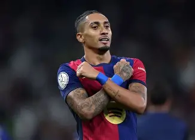

Raphinha
Extremo izquierdo

Datos personales
- Nombre completo: Raphael Dias Belloli
- Fecha de nacimiento: 14 de diciembre de 1996
- Lugar de nacimiento: Porto Alegre, Brasil
- Nacionalidad: Brasileña
- Altura: 1,76 m
- Posición: Extremo izquierdo
- Dorsal: 11
Trayectoria
- 2016-2018: Vitória Guimarães
- 2018-2019: Sporting de Lisboa
- 2019-2020: Stade Rennais
- 2020-2022: Leeds United
- 2022-actualidad: FC Barcelona
Estadísticas con el primer equipo
- Partidos: 130+
- Goles: 50+
- Asistencias: 40+
Palmarés
- La Liga (2022-2023)
- Supercopa de España (2023 y 2025)
- Copa del Rey (2024-2025)
Biografía
Raphinha llegó al FC Barcelona en 2022 procedente del Leeds United. Tras una primera temporada de adaptación, se ha consolidado como uno de los extremos más desequilibrantes del equipo, destacando por su regate, velocidad y gol.
Es internacional absoluto con la selección de Brasil y ha sido uno de los jugadores más determinantes del Barça en las últimas temporadas, siendo elegido MVP en varios partidos clave de Champions League.